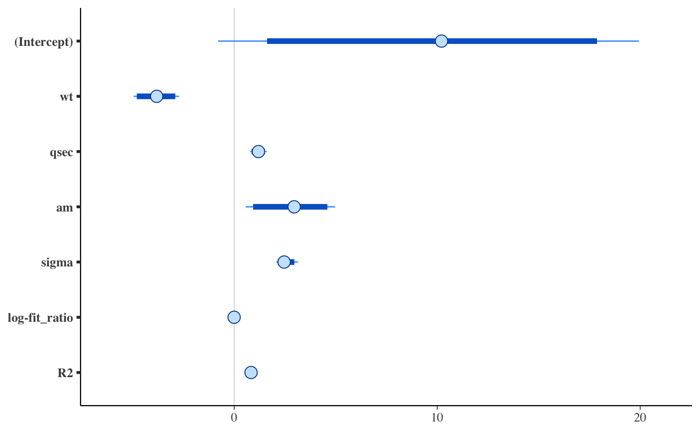
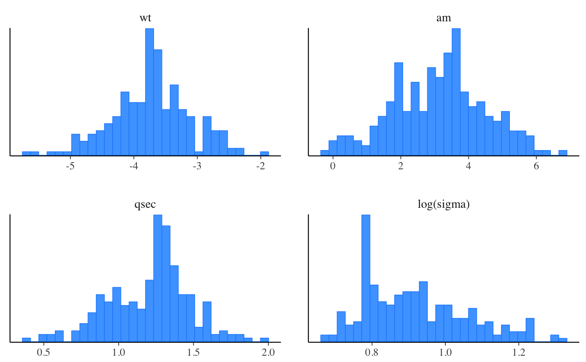

Bayesian regularized linear models via Stan
stan_lm.Rd Bayesian inference for linear modeling with regularizing priors on the model
parameters that are driven by prior beliefs about \(R^2\), the proportion
of variance in the outcome attributable to the predictors. See
Bayesian inference for linear modeling with regularizing priors on the model
parameters that are driven by prior beliefs about \(R^2\), the proportion
of variance in the outcome attributable to the predictors. See
priors for an explanation of this critical point.
stan_glm with family="gaussian" also estimates a linear
model with normally-distributed errors and allows for various other priors on
the coefficients.
stan_aov(formula, data, projections = FALSE, contrasts = NULL, ..., prior = R2(stop("'location' must be specified")), prior_PD = FALSE, algorithm = c("sampling", "meanfield", "fullrank"), adapt_delta = NULL) stan_lm(formula, data, subset, weights, na.action, model = TRUE, x = FALSE, y = FALSE, singular.ok = TRUE, contrasts = NULL, offset, ..., prior = R2(stop("'location' must be specified")), prior_intercept = NULL, prior_PD = FALSE, algorithm = c("sampling", "meanfield", "fullrank"), adapt_delta = NULL) stan_lm.wfit(x, y, w, offset = NULL, singular.ok = TRUE, ..., prior = R2(stop("'location' must be specified")), prior_intercept = NULL, prior_PD = FALSE, algorithm = c("sampling", "meanfield", "fullrank"), adapt_delta = NULL) stan_lm.fit(x, y, offset = NULL, singular.ok = TRUE, ..., prior = R2(stop("'location' must be specified")), prior_intercept = NULL, prior_PD = FALSE, algorithm = c("sampling", "meanfield", "fullrank"), adapt_delta = NULL)
Arguments
| formula, data, subset | Same as |
|---|---|
| projections | For |
| ... | Further arguments passed to the function in the rstan
package ( |
| prior | Must be a call to |
| prior_PD | A logical scalar (defaulting to |
| algorithm | A string (possibly abbreviated) indicating the
estimation approach to use. Can be |
| adapt_delta | Only relevant if |
| na.action, singular.ok, contrasts | Same as |
| model, offset, weights | Same as |
| x, y | In |
| prior_intercept | Either Note: If using a dense representation of the design matrix
---i.e., if the |
| w | Same as in |
Value
A stanreg object is returned
for stan_lm, stan_aov.
A stanfit object (or a slightly modified
stanfit object) is returned if stan_lm.fit or stan_lm.wfit is called directly.
Details
The stan_lm function is similar in syntax to the
lm function but rather than choosing the parameters to
minimize the sum of squared residuals, samples from the posterior
distribution are drawn using MCMC (if algorithm is
"sampling"). The stan_lm function has a formula-based
interface and would usually be called by users but the stan_lm.fit
and stan_lm.wfit functions might be called by other functions that
parse the data themselves and are analogous to lm.fit
and lm.wfit respectively.
In addition to estimating sigma --- the standard deviation of the
normally-distributed errors --- this model estimates a positive parameter
called log-fit_ratio. If it is positive, the marginal posterior
variance of the outcome will exceed the sample variance of the outcome
by a multiplicative factor equal to the square of fit_ratio.
Conversely if log-fit_ratio is negative, then the model underfits.
Given the regularizing nature of the priors, a slight underfit is good.
Finally, the posterior predictive distribution is generated with the predictors fixed at their sample means. This quantity is useful for checking convergence because it is reasonably normally distributed and a function of all the parameters in the model.
The stan_aov function is similar to aov, but
does a Bayesian analysis of variance that is basically equivalent to
stan_lm with dummy variables. stan_aov has a somewhat
customized print method that prints an ANOVA-like table in
addition to the output printed for stan_lm models.
References
Lewandowski, D., Kurowicka D., and Joe, H. (2009). Generating random correlation matrices based on vines and extended onion method. Journal of Multivariate Analysis. 100(9), 1989--2001.
See also
The vignettes for stan_lm and stan_aov, which have more
thorough descriptions and examples.
http://mc-stan.org/rstanarm/articles/
Also see stan_glm, which --- if family =
gaussian(link="identity") --- also estimates a linear model with
normally-distributed errors but specifies different priors.
Examples
# \donttest{ op <- options(contrasts = c("contr.helmert", "contr.poly")) fit_aov <- stan_aov(yield ~ block + N*P*K, data = npk, prior = R2(0.5), seed = 12345)#> #> SAMPLING FOR MODEL 'lm' NOW (CHAIN 1). #> Chain 1: #> Chain 1: Gradient evaluation took 2.4e-05 seconds #> Chain 1: 1000 transitions using 10 leapfrog steps per transition would take 0.24 seconds. #> Chain 1: Adjust your expectations accordingly! #> Chain 1: #> Chain 1: #> Chain 1: Iteration: 1 / 2000 [ 0%] (Warmup) #> Chain 1: Iteration: 200 / 2000 [ 10%] (Warmup) #> Chain 1: Iteration: 400 / 2000 [ 20%] (Warmup) #> Chain 1: Iteration: 600 / 2000 [ 30%] (Warmup) #> Chain 1: Iteration: 800 / 2000 [ 40%] (Warmup) #> Chain 1: Iteration: 1000 / 2000 [ 50%] (Warmup) #> Chain 1: Iteration: 1001 / 2000 [ 50%] (Sampling) #> Chain 1: Iteration: 1200 / 2000 [ 60%] (Sampling) #> Chain 1: Iteration: 1400 / 2000 [ 70%] (Sampling) #> Chain 1: Iteration: 1600 / 2000 [ 80%] (Sampling) #> Chain 1: Iteration: 1800 / 2000 [ 90%] (Sampling) #> Chain 1: Iteration: 2000 / 2000 [100%] (Sampling) #> Chain 1: #> Chain 1: Elapsed Time: 0.180854 seconds (Warm-up) #> Chain 1: 0.096668 seconds (Sampling) #> Chain 1: 0.277522 seconds (Total) #> Chain 1: #> #> SAMPLING FOR MODEL 'lm' NOW (CHAIN 2). #> Chain 2: #> Chain 2: Gradient evaluation took 1.1e-05 seconds #> Chain 2: 1000 transitions using 10 leapfrog steps per transition would take 0.11 seconds. #> Chain 2: Adjust your expectations accordingly! #> Chain 2: #> Chain 2: #> Chain 2: Iteration: 1 / 2000 [ 0%] (Warmup) #> Chain 2: Iteration: 200 / 2000 [ 10%] (Warmup) #> Chain 2: Iteration: 400 / 2000 [ 20%] (Warmup) #> Chain 2: Iteration: 600 / 2000 [ 30%] (Warmup) #> Chain 2: Iteration: 800 / 2000 [ 40%] (Warmup) #> Chain 2: Iteration: 1000 / 2000 [ 50%] (Warmup) #> Chain 2: Iteration: 1001 / 2000 [ 50%] (Sampling) #> Chain 2: Iteration: 1200 / 2000 [ 60%] (Sampling) #> Chain 2: Iteration: 1400 / 2000 [ 70%] (Sampling) #> Chain 2: Iteration: 1600 / 2000 [ 80%] (Sampling) #> Chain 2: Iteration: 1800 / 2000 [ 90%] (Sampling) #> Chain 2: Iteration: 2000 / 2000 [100%] (Sampling) #> Chain 2: #> Chain 2: Elapsed Time: 0.147892 seconds (Warm-up) #> Chain 2: 0.109623 seconds (Sampling) #> Chain 2: 0.257515 seconds (Total) #> Chain 2: #> #> SAMPLING FOR MODEL 'lm' NOW (CHAIN 3). #> Chain 3: #> Chain 3: Gradient evaluation took 1.1e-05 seconds #> Chain 3: 1000 transitions using 10 leapfrog steps per transition would take 0.11 seconds. #> Chain 3: Adjust your expectations accordingly! #> Chain 3: #> Chain 3: #> Chain 3: Iteration: 1 / 2000 [ 0%] (Warmup) #> Chain 3: Iteration: 200 / 2000 [ 10%] (Warmup) #> Chain 3: Iteration: 400 / 2000 [ 20%] (Warmup) #> Chain 3: Iteration: 600 / 2000 [ 30%] (Warmup) #> Chain 3: Iteration: 800 / 2000 [ 40%] (Warmup) #> Chain 3: Iteration: 1000 / 2000 [ 50%] (Warmup) #> Chain 3: Iteration: 1001 / 2000 [ 50%] (Sampling) #> Chain 3: Iteration: 1200 / 2000 [ 60%] (Sampling) #> Chain 3: Iteration: 1400 / 2000 [ 70%] (Sampling) #> Chain 3: Iteration: 1600 / 2000 [ 80%] (Sampling) #> Chain 3: Iteration: 1800 / 2000 [ 90%] (Sampling) #> Chain 3: Iteration: 2000 / 2000 [100%] (Sampling) #> Chain 3: #> Chain 3: Elapsed Time: 0.156569 seconds (Warm-up) #> Chain 3: 0.132974 seconds (Sampling) #> Chain 3: 0.289543 seconds (Total) #> Chain 3: #> #> SAMPLING FOR MODEL 'lm' NOW (CHAIN 4). #> Chain 4: #> Chain 4: Gradient evaluation took 1e-05 seconds #> Chain 4: 1000 transitions using 10 leapfrog steps per transition would take 0.1 seconds. #> Chain 4: Adjust your expectations accordingly! #> Chain 4: #> Chain 4: #> Chain 4: Iteration: 1 / 2000 [ 0%] (Warmup) #> Chain 4: Iteration: 200 / 2000 [ 10%] (Warmup) #> Chain 4: Iteration: 400 / 2000 [ 20%] (Warmup) #> Chain 4: Iteration: 600 / 2000 [ 30%] (Warmup) #> Chain 4: Iteration: 800 / 2000 [ 40%] (Warmup) #> Chain 4: Iteration: 1000 / 2000 [ 50%] (Warmup) #> Chain 4: Iteration: 1001 / 2000 [ 50%] (Sampling) #> Chain 4: Iteration: 1200 / 2000 [ 60%] (Sampling) #> Chain 4: Iteration: 1400 / 2000 [ 70%] (Sampling) #> Chain 4: Iteration: 1600 / 2000 [ 80%] (Sampling) #> Chain 4: Iteration: 1800 / 2000 [ 90%] (Sampling) #> Chain 4: Iteration: 2000 / 2000 [100%] (Sampling) #> Chain 4: #> Chain 4: Elapsed Time: 0.159664 seconds (Warm-up) #> Chain 4: 0.220511 seconds (Sampling) #> Chain 4: 0.380175 seconds (Total) #> Chain 4:#> stan_aov #> family: gaussian [identity] #> formula: yield ~ block + N * P * K #> observations: 24 #> predictors: 12 #> ------ #> Median MAD_SD #> (Intercept) 54.9 0.9 #> block1 1.2 1.3 #> block2 1.2 0.7 #> block3 -1.3 0.5 #> block4 -0.7 0.4 #> block5 0.2 0.3 #> N1 2.0 0.7 #> P1 -0.4 0.7 #> K1 -1.4 0.7 #> N1:P1 -0.7 0.7 #> N1:K1 -0.8 0.7 #> P1:K1 0.1 0.7 #> #> Auxiliary parameter(s): #> Median MAD_SD #> R2 0.5 0.1 #> log-fit_ratio 0.0 0.1 #> sigma 4.2 0.7 #> #> ANOVA-like table: #> Median MAD_SD #> Mean Sq block 43.4 20.9 #> Mean Sq N 48.4 28.4 #> Mean Sq P 14.1 12.0 #> Mean Sq K 28.9 19.5 #> Mean Sq N:P 12.4 16.4 #> Mean Sq N:K 16.7 21.5 #> Mean Sq P:K 5.4 7.4 #> #> ------ #> * For help interpreting the printed output see ?print.stanreg #> * For info on the priors used see ?prior_summary.stanreg# } (fit <- stan_lm(mpg ~ wt + qsec + am, data = mtcars, prior = R2(0.75), # the next line is only to make the example go fast enough chains = 1, iter = 500, seed = 12345, refresh = 0))#> Warning: There were 1 divergent transitions after warmup. Increasing adapt_delta above 0.99 may help. See #> http://mc-stan.org/misc/warnings.html#divergent-transitions-after-warmup#> Warning: Examine the pairs() plot to diagnose sampling problems#> Warning: Bulk Effective Samples Size (ESS) is too low, indicating posterior means and medians may be unreliable. #> Running the chains for more iterations may help. See #> http://mc-stan.org/misc/warnings.html#bulk-ess#> stan_lm #> family: gaussian [identity] #> formula: mpg ~ wt + qsec + am #> observations: 32 #> predictors: 4 #> ------ #> Median MAD_SD #> (Intercept) 10.2 5.7 #> wt -3.8 0.7 #> qsec 1.2 0.2 #> am 3.0 1.4 #> #> Auxiliary parameter(s): #> Median MAD_SD #> R2 0.8 0.0 #> log-fit_ratio 0.0 0.1 #> sigma 2.5 0.3 #> #> ------ #> * For help interpreting the printed output see ?print.stanreg #> * For info on the priors used see ?prior_summary.stanreg#>